ЧТО ТАКОЕ ИЛЛЮСТРАЦИЯ
Две головы лучше
Пара новостей для начала. В Пушкинском выставка Польской живописи, кажется, богатая на неожиданности.
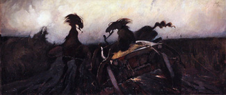
11-го июня в клубе ДОМ откроется первая выставка Дмитрия Изотова, он же hotshkin
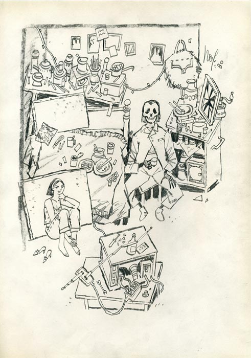
Я там про него все, что думаю, сказал, и, по-моему, пропускать это нельзя. Дальше хочу изложить одну простую мысль – но сперва придется сделать вот что: решить, что такое иллюстрация вообще. О чем мы говорим все это время? Ясного общепринятого понимания в природе нет – а оно, в общем, необходимо. Википедия (которой время от времени все-таки можно верить), например, определяет иллюстрацию примерно как любого рода авторское изображение, упирающее на содержание больше, чем на форму – в общем, верно, но слишком размыто. Тут правильно будет обратиться к авторитетам. Авторитеты сегодня такие: Стивен Хеллер – арт-директор Нью Йорк Таймс, автор полутора десятков книг по граф дизайну и иллюстрации, завуч школы искусств в Чикаго; Маршалл Арисман – иллюстратор, рисовавший буквально для всех важных американских изданий, и тоже педагог и исследователь.
Арисман среди прочего сильно развил в свое время культуру коллажа в иллюстрации.
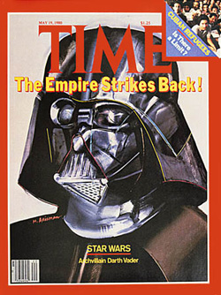
В соавторстве они написали несколько книг по иллюстрации, в частности Education of an illustrator и Inside the business of illustration (по ссылкам можно почитать в оригинале, кому интересно)- и в общем, можно считать их главными идеологами по этой части, так что запишите себе куда-нибудь. Так вот. Хеллер-Арисманн определяют иллюстрацию как «фигуративную форму искусства, основанную на рассказывании историй». Из этого у них следует, например, что обучение иллюстрации, во-первых, нельзя сводить к овладению техническими навыками, а во-вторых, нельзя сращивать с обучением графическому дизайну – но все это заслуживает отдельных длинных разговоров. Если задуматься, иллюстрация ведь древнейшее из изобразительных искусств. Наскальная живопись была, по сути, иллюстрацией, и именно из нее – через пиктограммы, петроглифы, иероглифы – развилась письменность. Это, по-моему, дико интересно и важно понимать, когда занимаешься иллюстрацией. Визуализация – это даже не полдела.
Очевидно, что иллюстрация не должна сводиться к повторению, пересказу иллюстрируемого текста – она и есть текст, ее задача комментировать, а не разжевывать. Тут есть нюансы, например, историческая литература требует как раз подробного знания деталей быта описываемого времени, и задача иллюстратора показать читателю как именно оно выглядело. Но и тут границы интерпретации текста – только вопрос амбиций иллюстратора.
Марика Мет Ленивее, чем стоило бы, сделана картинка, и выводят из себя стандартные фотошопские кисти, но подробности паровоза все окупают.
Я, как не раз уже говорил, считаю художников комикса высшими существами, просто по объему работы, которую они производят – но при этом комикс в известном смысле суть инфляция иллюстрации. Комикс – это поэма, а иллюстрация – хокку. Сюжет, нарратив, «смысл» в иллюстрации (должен быть) сконцентрирован до предела.
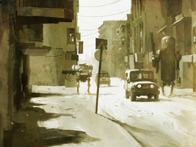
Я ее вешал уже, но это моя любимейшая (и у автора, кажется, тоже) именно в этом смысле вещь. Тот случай, когда продолжение истории в картинках только испортило бы кайф – тут уже есть и предыстория, особенно устроенный мир, и продолжение – звучит тревожная музыка, вот-вот начнется заваруха. Круче всего то, что при такой пронзительной достоверности сцены роботы настолько нелепые. Вуда вообще выгодно отличает от прочих специалистов по гигантским человекоподобным роботам хорошая (и ненавязчивая) самоирония. Грань, за которой иллюстрация становится иллюстрацией, вполне ощутима – бывает достаточно механически перевалить за нее. Количество действующих на иллюстрации персонажей / объектов должно быть достаточным для формирования сюжета. Достаточное количество равняется, представьте себе, двум. На цифре два количество переходит в качество. И один плюс один «в разы» больше двух.
(Именно поэтому, к слову, я без колебаний рублю при модерации сообщества ru_illustrators истории «про одиночество» – ничего не имею против одиноких людей как таковых, но иллюстратор должен уметь рассказать истрию; а дизайну персонажей место в сообществе doodle_noodles.) «Человек сидит на стуле» – еще не иллюстрация. Два человека сидят на стульях – гарантированно иллюстрация. Они либо смотрят друг на друга (изучают? любуются?), либо не смотрят (поссорились? играют во что-то?), либо смотрят в камеру (тоже событие – пришли фотографироваться? они семья?).
Jan Balet Вообще полезный блог, сходите.
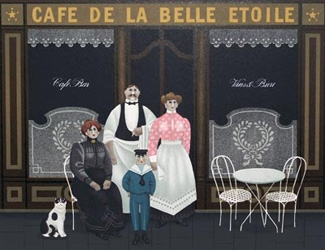
Все эти вопросы зритель задаст себе сам, и даже если вы поленились придумать историю, он достроит ее за вас. В том-то и фокус. Наличие этих вопросов важнее наличия ответов. А одинокий персонаж? ну, персонаж. Зритель уходит не заинтересовавшись.
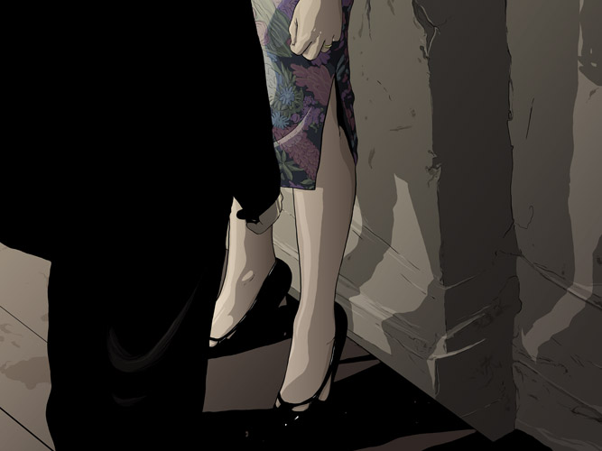
Любой объект, с которым взаимодействует персонаж, может стать антагонистом. Стул, на котором сидит герой, может не просто выполнять функцию, но играть роль, находиться в неком взаимоотношении, если не в конфликте, с сидящим на нем: он им может быть, например, придавлен. Или наоборот – сидящий так легок, что стул как-то вытягивается под ним, расправляет плечи. Или качается под ним, скрипя и боясь развалиться. Или выбирает момент, чтобы скинуть его. You name it.
Стерлинг Хандли, иллюстратор месяца.
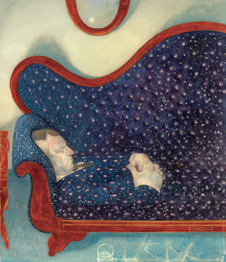
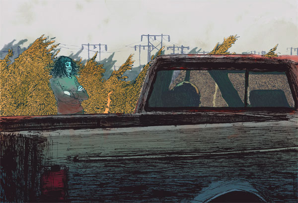
Кстати об авторитетах, как-то сегодня целая стопка подобралась благодарных потомков Роберта Уивера, так что странно не упомянуть его самого. И еще вот.
Роберт Уивер
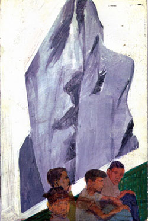
Есть интересные исключения, – которые, строго говоря, не являются исключениями, просто все тоньше. Так, портрет становится иллюстрацией тогда, когда вступает в некие отношения с тем, кто нарисован, рассказывает о нем историю. На портрете может и должно происходить событие.
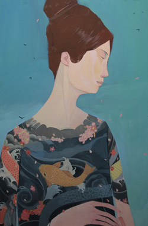
Андре Каррильо большой по этой части мастер.
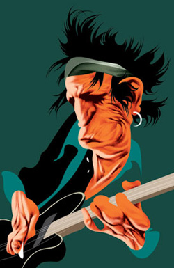
И еще одна того же автора:
Tут, обратите внимание, событие формирует фон. «Боксер» – еще не история. «Боксер на улице» – уже да.
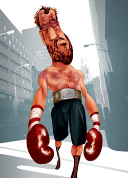
Тут взаимоотношение образуется с тем, что должно бы было торчать из такого сюртука.
Тревис Луи У этого парня другая проблема – прирос намертво к любимому коньку
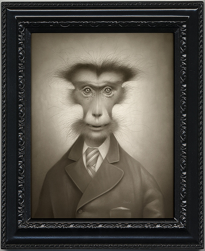
Вот еще хороший пример: казалось бы, ну, мужик и мужик.
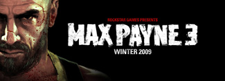
Но тут хитро: второй головой оказывается голова того же персонажа из предыдущей версии игры, когда он был заметно моложе, аккуратнее и целее. То есть событие происходит не в в плоскости иллюстрации, а в плоскости временной.
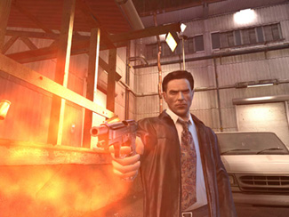
И еще из шикарных иллюстраций с одним героем – не знаю автора, к сожалению.
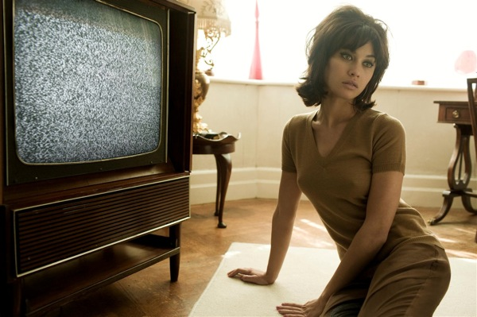
Последний совет и я затыкаюсь. При тренировочном рисовании с натуры любой парный набросок ценнее и полезнее одинарного – опять же, больше, чем вдвое. При том, что двух человек с натуры рисовать проще, чем одного – больше зацепок, возможностей проверить себя длинными связями, контрформой и т.д.